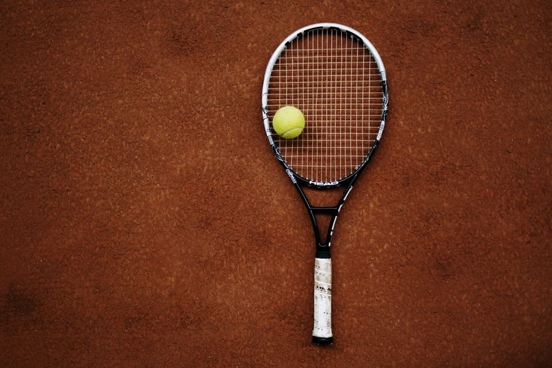

Hva er tennis?
Tennis er en ballsport som spilles med en racket og en ball. Målet er å slå ballen over nettet og innenfor banen, slik at motstanderen ikke klarer å slå den tilbake.
Du får poeng når motstanderen ikke får ballen tilbake på riktig måte. Ballen kan sprette én gang på din side før du må slå den tilbake. Du kan spille én mot én eller to mot to.
I starten er det vanskelig å treffe ballen riktig og sende den dit du vil. Derfor er det lurt å øve på rolige slag før du prøver å slå hardt.
Slik kommer du i gang

- Lån eller finn en racket og en ball. Prøv rolige slag sammen med noen, og bli kjent med spillet.
- Øv på teknikken og på å få ballen over nettet og inn i banen.
- Når du blir kjent med spillet og teknikken, kan du prøve en enkel kamp.
- Øv jevnlig. Jo mer du spiller, desto tryggere blir du, så ikke gi opp når du bommer.
Dette trenger du for å spille tennis
- En tennisracket
- Tennisballer
- Gode tennissko
- En tennisbane
Slå rolig og treff ballen godt før du prøver å slå hardt.